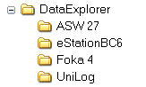

Hinweis: Bitte verwenden Sie keinen Installationspfad der Umlaute enthält. Java arbeitet mit dem UTF-8-Zeichensatz. Beim Übersetzen eines Umlautes entstehen kryptische Zeichen, was dann zu Fehlverhalten führt.
Welche Verzeichnisse bei der Installation verwendet und angelegt werden ist in der README-Datei beschrieben. Hier soll es viel mehr um die Verzeichnisse gehen, die das Programm zum Ablegen von Einstellungen, Grafikvorlagen und trace.log-Dateien benutzt.
Als Basisverzeichnis benutzt das Programm
Hier werden die Verzeichnisse
angelegt. Das soll als Übersicht reichen. Später im Text wird dann noch genauer auf den Inhalt der Verzeichnisse eingegangen.
Wie sind die Daten organisiert, die die eigentlichen Messwerte enthalten. Es muss ein Stammordner ausgewählt werden (siehe Einstellungsdialog), darunter werden für jedes benutzte Gerät, Ordner angelegt. Die Geräteordner entsprechen dem ausgewältem Gerätenamen. Zusätzlich werden Ordner für jedes angelegte Objekt angelegt. Beim sichern einer Datendatei wird ein Dateiname entsprechend der Konfiguration im Einstellungsdialog vorgeschlagen. Als Beispiel Datum_Objektname.osd. Hat nun die angezeigte Datenaufnahme einen Bezug zu einem Objekt, ein Objekt ist beim sichern angelegt und ausgewählt, wird zusätzlich zur Datendatei im Geräteordner ein Dateilink in dem Objektordner abgelegt. Dateilinks brauchen nur sehr wenig Platz, da sie ja nur einen Verweis auf eine andere Datei darstellen. Es gibt keine Duplizierung von Datendateien. Mit der Verwendung von Objekten sieht man beim Öffnen einer Datei nur die objektbezogenen Dateien. Dadurch kann man beispielsweise leicht erkennen, wann der Akku des Objektes XY das letzte mal geladen wurde. Beispielhaft soll hier mal ein kleiner Ordnerstrukturausschnitt dargestellt werden:

Hinweis: Da Dateilinks betriebssystemspezifisch sind, gibt es die Möglichkeit, die Dateilinks zu entfernen und neu zu erstellen (siehe Einstellungsdialog). Dadurch ist ein Umzug der Daten auf ein anderes Betriebssystem ein Kinderspiel.